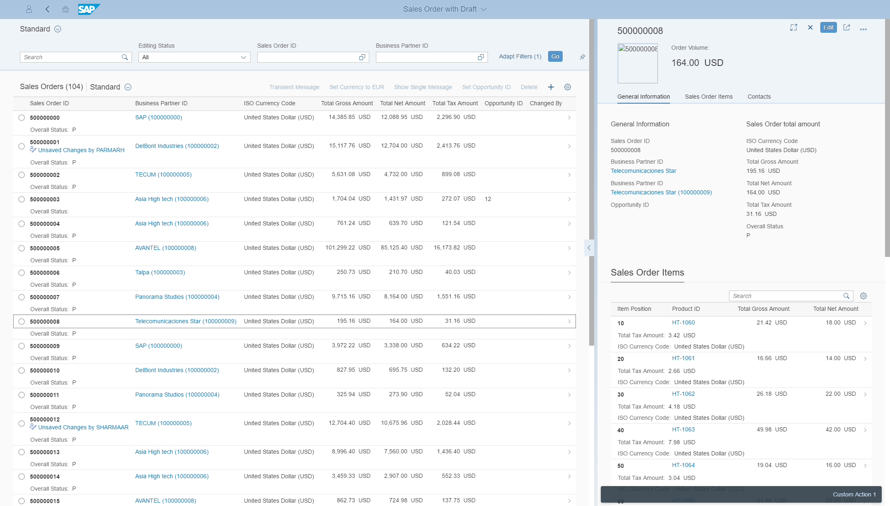
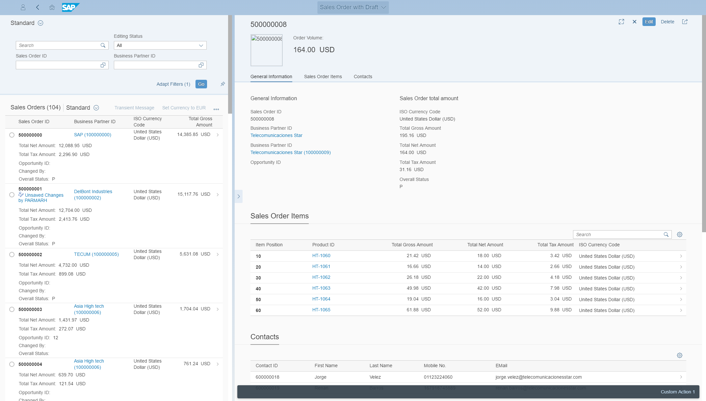
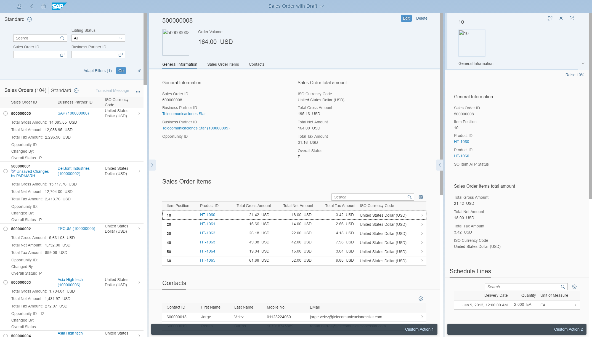
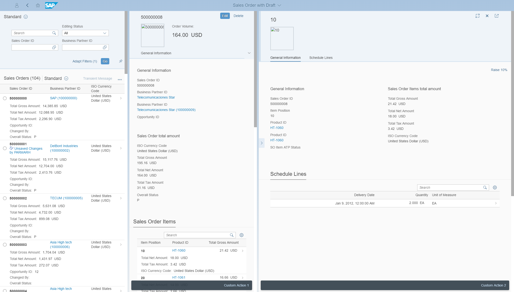

Enabling the Flexible Column Layout
The flexible column layout allows users to see more details on a page, and to expand and collapse the screen areas, depending on their requirements.
The flexible column layout offers different layouts with up to three columns. Depending on which panel the user is focused on, it can be expanded. The user can also switch between different layouts and enable full-screen mode.
-
For the overview page, this layout is not relevant.
-
The analytical list page only supports the TwoColumnsBeginExpanded layout. For more information, see also 2409984
 .
. -
The flexible column layout can only be used in draft scenarios.
"sap.ui.generic.app": {
"_version": "1.1.0",
"settings": {
"flexibleColumnLayout": {
"defaultTwoColumnLayoutType": "TwoColumnsMidExpanded",
"defaultThreeColumnLayoutType": "ThreeColumnsEndExpanded"
}
},
"pages": [...Use the following attributes to create the column layout you want:
-
defaultTwoColumnLayoutType: 2-column layout with the following options:
-
TwoColumnsBeginExpanded
 -
TwoColumnsMidExpanded

-
-
defaultThreeColumnLayoutType: 3-column layout with the following options:
-
ThreeColumnsMidExpanded
 -
ThreeColumnsEndExpanded

-
Users can expand and collapse the columns using the focus buttons. They can change to full-screen mode by choosing the full-screen button.